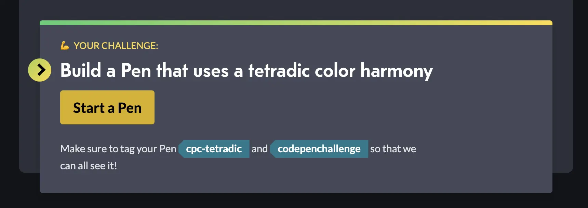
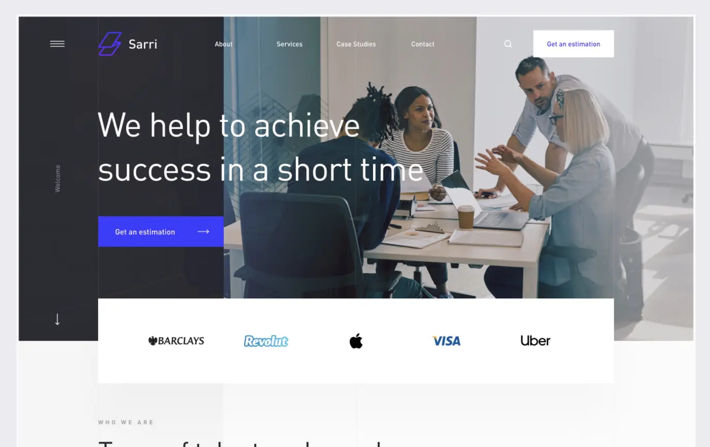

Layout exercises
-

Exercise
In this exercise your job is to create a sloped edge slicing through a card component containing some text content and an image. The angle of the sloped edge must be consistent at all screen sizes and its center point must intersect with that of the card.
The content and the image is not important for this exercise.
Hints:
-

Exercise #2 -

Exercise #2
CSS Tricks

- 

- 